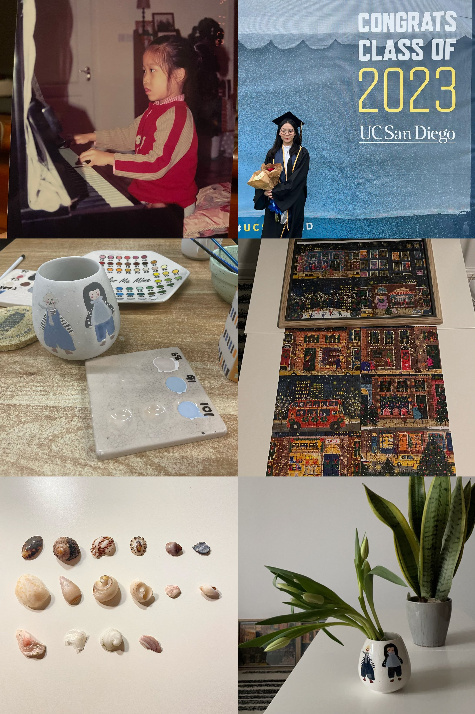
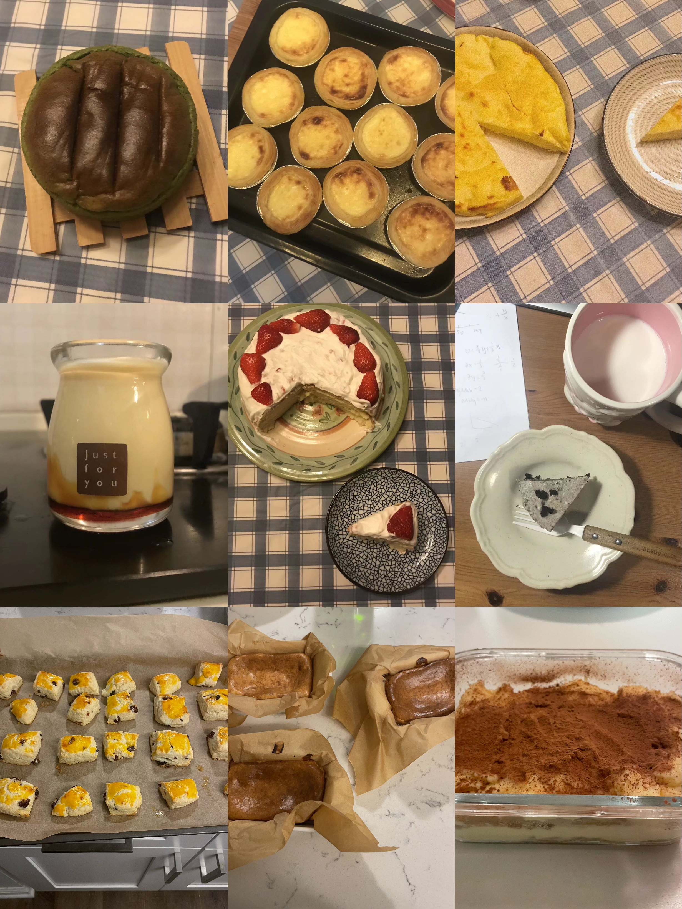

I wear two hats – part analyst, part statistician. My role involves translating mathematical knowledge into practical advice that fuels better strategic decisions and business solutions. On the statistical front, I grasp theoretical concepts and apply relevant analytic tools and tests. The data-driven side of me extracts valuable insights and communicates effectively in industrial fields.
My academic journey reflects my curiosity and meticulous nature. I earned a Bachelor's degree in Statistics from University of California, San Diego. During this time, I delved into the vast implications and potential applications of data in our personal lives and industries. Motivated to delve deeper, I am pursuing a Master's degree in Data Science at New York University, blending all three skills: statistics, computer science, and business knowledge. I refined my technical skills by immersing myself in tools like Python, SQL, Machine Learning, and Data Visualization.
Piano🎹, Statistics🎓, Mine Coloring🎨, Puzzle🧩, Collecting Shells🐚, Flowers & Plants💐🌿

Oh, I also have SWEET😍 tooth and like to bake all kinds of sweet food during spare time or stress! It helps me release stress :>
